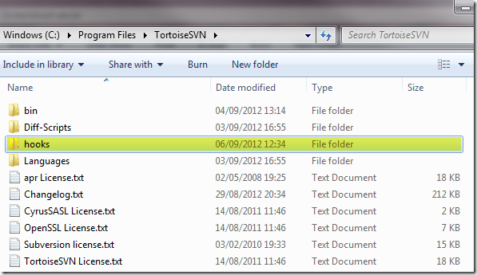
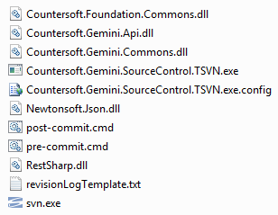
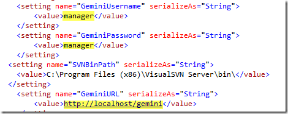
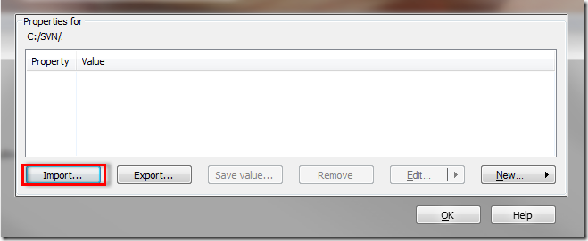
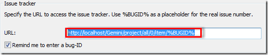
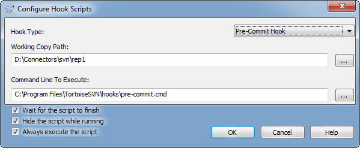
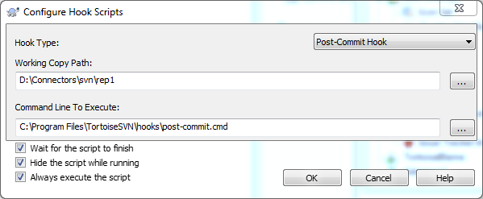
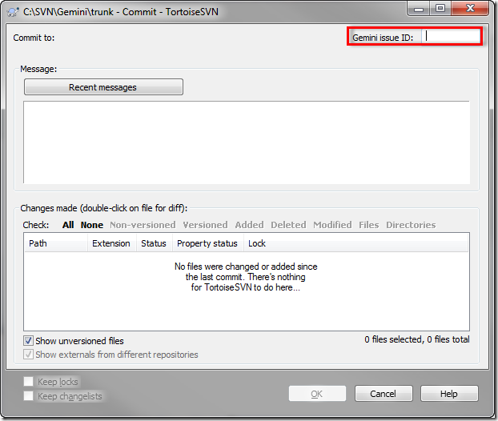

Download the connector.
If required, create a 'hooks' folder within the TortoiseSVN installation folder (typically C:\Program Files\TortoiseSVN\hooks).

Place the following files into the TortoiseSVN 'hooks' folder
svn.exe file within the TortoiseSVN installation folder (typically C:\Program Files\TortoiseSVN\bin). Or download the latest VisualSVN Subversion Command-Line Client from.
The end result should look like this.

Configure your Gemini url, username and password in the Countersoft.Gemini.SourceControl.TSVN.exe.config file.

Set SVN Project Properties for every project you want to associate with Gemini and click on import button.

Import the 'gemini_svn.svnprops' file which will be located in the 'SVN Properties' folder. Once imported, change the 'bugtraq:url' to point towards your Gemini installation by double clicking on the URL.

Click to TortoiseSVN -> Settings -> Hook Scripts and set the pre and post commit script for every project (working copy path) needed. Passing 'pre-commit.cmd' or 'post-commit.cmd' as the command to run (e.g. 'C:\Program Files\TortoiseSVN\hooks\pre-commit.cmd').
 
When you want to tie a subversion commit to an issue, simply place the issue number in the Subversion commit comment box.

All commited files and comments appear under Code Review as follows.